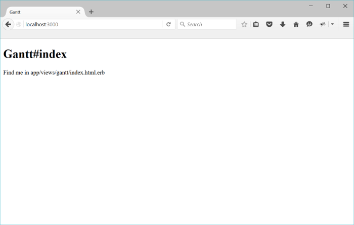
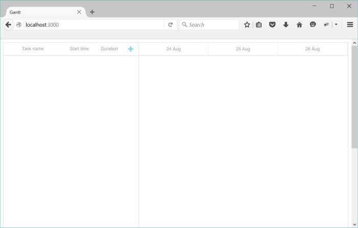
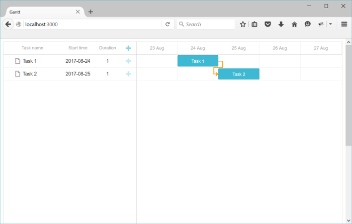

In this article you'll learn how to create a Gantt chart with a Ruby on Rails backend. For implementing this app we'll use Ruby 2.4.1, Rails 5.1.3 and MySQL. This tutorial assumes that you have all prerequisites already installed. Otherwise please visit the official tutorials first.
If you use some other technology, check the list of available integration variants below:
Have a look at the demo on GitHub.
To add a new project just run the following command in the terminal:
rails new gantt-app -d mysql
Let's start with creating a controller and a default page for our application. Move to the application folder and generate a new controller with the index action:
cd gantt-app
rails generate controller gantt indexThe output should confirm that new files were created.
To configure the routing, open the file config/routes.rb. Change the default route to the "index" action of our new controller:
config/routes.rb
Rails.application.routes.draw do
root :to => "gantt#index"
end
After that we can test our server by running in the command line:
rails server
Open http://localhost:3000/ in your browser. The result should be like this:

So the app is working and we've got our default page, now we can proceed to adding a gantt chart.
Now we are ready to add a gantt chart to our page.
Open the layout page and add a yield into the head tag. We'll use it to add dhtmlxgantt files to the page:
app/views/layouts/application.html.erb
<!DOCTYPE html>
<html>
<head>
<title>dhtmlxGantt</title>
<%= stylesheet_link_tag 'application', media:'all','data-turbolinks-track' => true %>
<%= javascript_include_tag 'application', 'data-turbolinks-track' => true %>
<%= yield(:head) %> <%= csrf_meta_tags %>
</head>
<body>
<%= yield %>
</body>
</html>
After that, go to the gantt/index view and add a gantt chart there:
app/views/gantt/index.html.erb
<% content_for :head do %>
<%= stylesheet_link_tag 'https://cdn.dhtmlx.com/gantt/edge/dhtmlxgantt.css' %>
<%= javascript_include_tag 'https://cdn.dhtmlx.com/gantt/edge/dhtmlxgantt.js' %>
<% end %>
<div id="gantt_here" style='width:100%; height:800px;'></div>
<script>
gantt.init("gantt_here");
</script>
Note that we've added dhtmlx gantt files from CDN rather than locally. For the development you'll want to use a readable version of source codes that comes with the download package.
After that we can have a look at the current result. Open http://localhost:3000/ (the rails server) in a browser. You should get the following result:

Thus you've got a Gantt chart where you can add tasks and modify them. But it lacks the saving ability. To provide it, we need to proceed with creating models.
Since we're using MySQL, make sure that you have correct connection settings in config/database.yml, for example:
config/database.yml
development:
adapter: mysql2
encoding: utf8
host: localhost
database: gantt-app
username: root
password:
Now we need to create models for tasks and links.
To create a model for tasks, we need to run a command that contains the task properties:
rails generate model Task \
text:string \
start_date:datetime \
duration:integer \
parent:integer \
progress:decimalA similar but shorter command is used to create a model for links:
rails generate model Link \
source:integer \
target:integer \
link_type:string:limit1Note that dhtmlxgantt link object must have a property named type, which stores the type of the relation (start-to-start, finish-to-finish, etc.).
We can't add such a property to our model, since the "type" name is already reserved by ActiveRecord. As a workaround, we'll name this property link_type and will do the required mapping in the controller.
You can have a look at the full list of properties, both mandatory and optional, available for the Task object and Link object.
After that we need to run a migration in order to update our database:
rake db:migrateLet's add some test data while we're here:
1. Open the Rails console by running:
rails c
2. Add a couple of tasks and links like this:
Task.create :text=>"Task 1", :start_date=>"2015-10-25", :duration=>2, :progress=>0;
Task.create :text=>"Task 2", :start_date=>"2015-10-27", :duration=>3, :progress=>0.5;
Link.create :source=>1, :target=>2, :link_type=>"0";
3. Enter "exit" to close the console.
Next we need to implement data loading and saving in the chart with the help of controllers.
After we've created model classes and run the migration, we can load the database data into our gantt.
dhtmlxGantt expects data in the JSON format, so firstly we'll add a new action to our GanttController where we'll read, format and output gantt data:
app/controllers/gantt_controller.rb
class GanttController < ApplicationController
def index
end
def data
tasks = Task.all
links = Link.all
render :json=>{
:data => tasks.map{|task|{
:id => task.id,
:text => task.text,
:start_date => task.start_date.to_formatted_s(:db),
:duration => task.duration,
:progress => task.progress,
:parent => task.parent,
:open => true
}},
:links => links.map{|link|{
:id => link.id,
:source => link.source,
:target => link.target,
:type => link.link_type
}}
}
end
end
Add a route for this action into routes.rb:
config/routes.rb
Rails.application.routes.draw do
root :to => "gantt#index"
scope '/api' do get "/data", :to => "gantt#data" endend
And call this action from the client side using the gantt.load method:
app/views/gantt/index.html.erb
gantt.config.date_format = "%Y-%m-%d %H:%i:%s";
gantt.init("gantt_here");
gantt.load("/api/data");
Note that date_format config specifies the format of dates (start_date of Task) that comes from the server.
If you run the server now and open http://localhost:3000/ in your browser, you should be able to see a gantt chart populated with tasks and links from the database. No changes would be posted back to the database, however. We're going to fix it in the next step.
dhtmlxGantt can transmit all changes made by the user to the RESTful API on a backend, where everything can be saved to the database. You can check the protocol details here.
That's the way we're going to implement data saving now:
Firstly, we will enable posting changes on the client:
app/views/gantt/index.html.erb
gantt.config.date_format = "%Y-%m-%d %H:%i:%s";
gantt.init("gantt_here");
gantt.load("/api/data");
var dp = new gantt.dataProcessor("/api");dp.init(gantt);dp.setTransactionMode("REST");
Then, we need to add two controllers: one for Tasks and another one for Links and implement all the required actions.
Let's start with a controller for Tasks:
rails generate controller task --no-helper --no-assets --no-view-specs
Since this controller is not going to have any views, we've used --no- flags in order not to generate files we won't need.
Next we will implement actions for creating, updating and deleting tasks:
app/controllers/task_controller.rb
class TaskController < ApplicationController
protect_from_forgery
def update
task = Task.find(params["id"])
task.text = params["text"]
task.start_date = params["start_date"]
task.duration = params["duration"]
task.progress = params["progress"] || 0
task.parent = params["parent"]
task.save
render :json => {:action => "updated"}
end
def add
task = Task.create(
:text => params["text"],
:start_date=> params["start_date"],
:duration => params["duration"],
:progress => params["progress"] || 0,
:parent => params["parent"]
)
render :json => {:action => "inserted", :tid => task.id}
end
def delete
Task.find(params["id"]).destroy
render :json => {:action => "deleted"}
end
end
A couple of notes regarding this code:
After that we need to add the new routes to the config, and users will be able to view/create/update and delete tasks in our gantt chart:
config/routes.rb
Rails.application.routes.draw do
root :to => "gantt#index"
scope '/api' do
get "/data", :to => "gantt#data"
post "/task", :to => "task#add" put "/task/:id", :to => "task#update" delete "/task/:id", :to => "task#delete" end
end
Now, let's do the same for links.
Generate a Link controller:
rails generate controller link --no-helper --no-assets --no-view-specs
The implementation may look like this:
app/controllers/link_controller.rb
class LinkController < ApplicationController
protect_from_forgery
def update
link = Link.find(params["id"])
link.source = params["source"]
link.target = params["target"]
link.link_type = params["type"]
link.save
render :json => {:action => "updated"}
end
def add
link = Link.create(
:source => params["source"],
:target => params["target"],
:link_type => params["type"]
)
render :json => {:action => "inserted", :tid => link.id}
end
def delete
Link.find(params["id"]).destroy
render :json => {:action => "deleted"}
end
end
Then add routes for new actions:
config/routes.rb
Rails.application.routes.draw do
root :to => "gantt#index"
scope '/api' do
get "/data", :to => "gantt#data"
post "/task", :to => "task#add"
put "/task/:id", :to => "task#update"
delete "/task/:id", :to => "task#delete"
post "/link", :to => "link#add" put "/link/:id", :to => "link#update" delete "/link/:id", :to => "link#delete" end
end
And that's it. If you run application now you'll have an interactive gantt chart with Rails and MySql backend:

Please check more of our guides for more features of dhtmlxGantt.
The client-side gantt allows reordering tasks using drag and drop. So if you use this feature, you'll have to store this order in the database. You can check the common description here.
Let's now add this feature to our app.
Firstly, we need to allow users to change tasks order in the UI. Open the Index view and update the configuration of gantt:
app/views/gantt/index.html.erb
gantt.config.order_branch = true;gantt.config.order_branch_free = true;
gantt.init("gantt_here");
Now, let's reflect these changes on the backend. We need to add the order info to our model, we'll name it sortorder. The updated model declaration may look like this:
rails generate model Task \
text:string \
start_date:datetime \
duration:integer \
parent:integer \
progress:decimal \
sortorder:integerOr add a new property to the existing model:
1. create a migration:
rails generate migration add_sortorder_to_tasks sortorder:integer2. Open the generated migration and add a default value to the "sortorder" column:
class AddSortorderToTasks < ActiveRecord::Migration[5.1]
def change
add_column :tasks, :sortorder, :integer, :default=>0
end
end
And migrate:
rake db:migrateAfter that we need to update CRUD in the controllers:
sortorder column: app/controllers/gantt_controller.rb
class GanttController < ApplicationController
def index
end
def data
tasks = Task.all
links = Link.all
render :json=>{
:data => tasks.order(:sortorder).map{|task|{ :id => task.id,
:text => task.text,
:start_date => task.start_date.to_formatted_s(:db),
:duration => task.duration,
:progress => task.progress,
:parent => task.parent,
:open => true
}},
:links => links.map{|link|{
:id => link.id,
:source => link.source,
:target => link.target,
:type => link.link_type
}}
}
end
end
sortorder: app/controllers/task_controller.rb
class TaskController < ApplicationController
...
def add
maxOrder = Task.maximum("sortorder") || 0
task = Task.create(
:text => params["text"],
:start_date=> params["start_date"],
:duration => params["duration"],
:progress => params["progress"] || 0,
:parent => params["parent"],
:sortorder => maxOrder + 1 )
render :json => {:action => "inserted", :tid => task.id}
end
end
app/controllers/task_controller.rb
class TaskController < ApplicationController
protect_from_forgery
def update
task = Task.find(params["id"])
task.text = params["text"]
task.start_date = params["start_date"]
task.duration = params["duration"]
task.progress = params["progress"] || 0
task.parent = params["parent"]
task.save
if(params['target']) Task.updateOrder(task.id, params['target']) end
render :json => {:action => "updated"}
end
...
end
Task.updateOrder implementation:
app/models/task.rb
class Task < ApplicationRecord
def self.updateOrder(taskId, target)
nextTask = false
targetId = target
if(target.start_with?('next:'))
targetId = target['next:'.length, target.length]
nextTask = true;
end
if(targetId == 'null')
return
end
targetTask = self.find(targetId)
targetOrder = targetTask.sortorder
if(nextTask)
targetOrder += 1
end
self.where("sortorder >= ?", targetOrder).
update_all('sortorder = sortorder + 1')
task = self.find(taskId)
task.sortorder = targetOrder
task.save
end
end
Gantt doesn't provide any means of preventing an application from various threats, such as SQL injections or XSS and CSRF attacks. It is important that responsibility for keeping an application safe is on the developers implementing the backend. Read the details in the corresponding article.
In case you've completed the above steps to implement Gantt integration with Ruby on Rails, but Gantt doesn't render tasks and links on a page, have a look at the Troubleshooting Backend Integration Issues article. It describes the ways of identifying the roots of the problems.
Now you have a fully functioning gantt. You can view the full code on GitHub, clone or download it and use it for your projects.
You can also check guides on the numerous features of gantt or tutorials on integrating Gantt with other backend frameworks.
Back to top